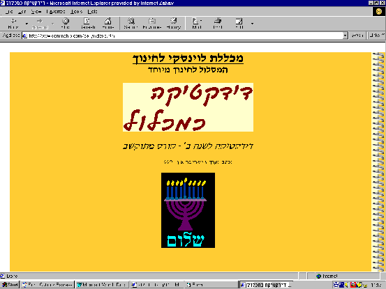
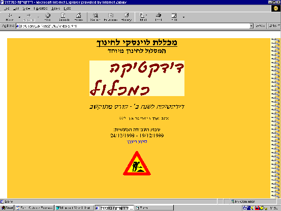

מתוך האתר: http://www.levinsky.macam98.ac.il/sari , דוגמאות לדפים שעודכנו במועדים .שונים  נרות מתנועעים, ושיר "חנוכה חנוכה" מתנגן ברקע  הפועל לא מפסיק להדק את ערמת האדמה, וחדר CHAT פתוח לסטודנטיות כל ערב